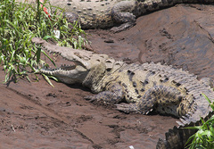

El cocodrilo americano, también conocido como lagarto real, lagarto amarillo o cocodrilo de río, asimismo como cocodrilo narigudo, cocodrilo aguja, caimán de la costa (Venezuela), caimán aguja (Colombia) o cocodrilo de Tumbes (Perú) (Crocodylus acutus), pertenece a la familia de Crocodylidae. Se distingue por su gran tamaño, generalmente entre 3 y 4 m, llegando hasta 7.5 m. Posee un hocico notablemente alargado y con dientes. Su dorso es grisáceo, presenta flecos y manchas oscuras, el vientre no tiene marcas. Tiene una musculosa y gruesa cola. Se distribuye desde Florida, algunas islas del Mar Caribe y zonas costeras del golfo de México (incluyendo la península de Yucatán), hasta ríos de la costa caribeña de Honduras, Nicaragua, Costa Rica, Panamá, Colombia y Venezuela; asimismo, a lo largo de la costa del Pacífico, desde México (de Sinaloa a Chiapas) hasta el norte de Perú. Habita cuerpos de agua permanente como lagunas costeras, esteros y estuarios de ríos y arroyos, cuya vegetación dominante son manglares, carrizos y otra vegetación acuática. En el Pacífico su hábitat presenta clima cálido subhúmedo con lluvias en verano y 5.6% de lluvia. En México, la NOM-059-SEMARNAT-2010 considera a la especie como sujeta a protección especial; la UICN2019-1 como vulnerable. Entre los principales riesgos que le amenazan se encuentra su eventual captura y explotación (se sabe de la existencia de captura clandestina y comercio ilegal de pieles). Otros riesgos son la destrucción y fragmentación del hábitat por actividades humanas y la creciente contaminación. En algunos lugares, el ataque a humanos conlleva a la eliminación de individuos de la especie e incluso de poblaciones. Se le suele confundir con aligátores (Alligator) con los cuales está poco emparentado, estos últimos son más próximos a los caimanes, como el yacaré overo (Caiman latirostris). La diferencia física entre ambos grupos es importante, lo que permite identificarlos sin problema.
Caracteristicas